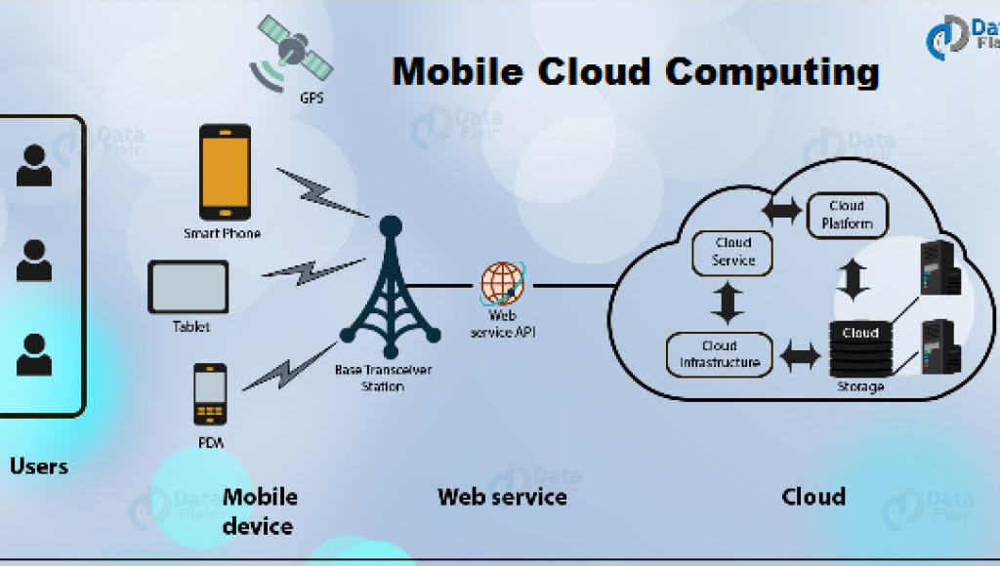

Mobile computing is human–computer interaction in which a computer is expected to be transported during normal usage, which allows for transmission of data, voice and video. Mobile computing involves mobile communication, mobile hardware, and mobile software. Communication issues include ad hoc networks and infrastructure networks as well as communication properties, protocols, data formats and concrete technologies. Hardware includes mobile devices or device components. Mobile software deals with the characteristics and requirements of mobile applications.
